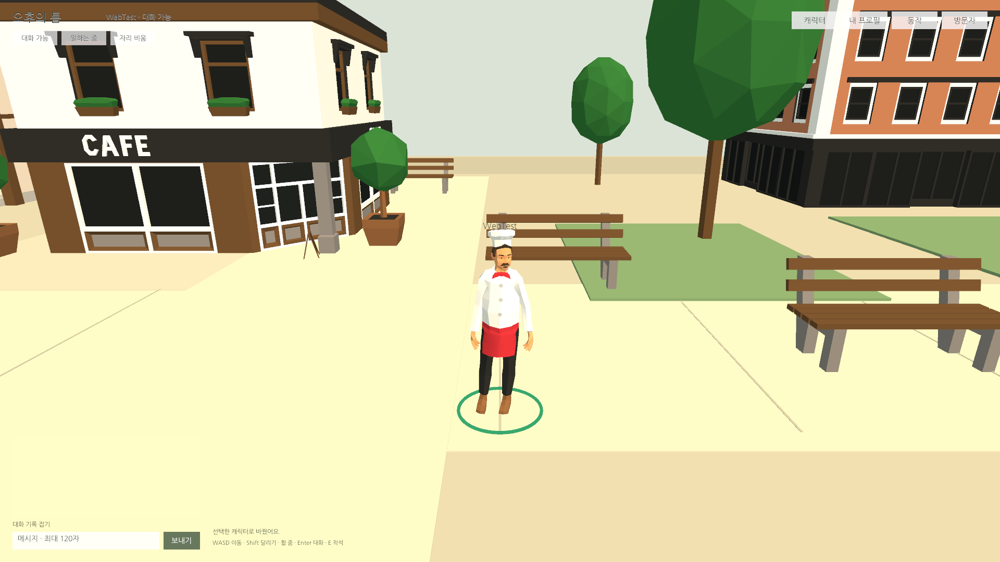
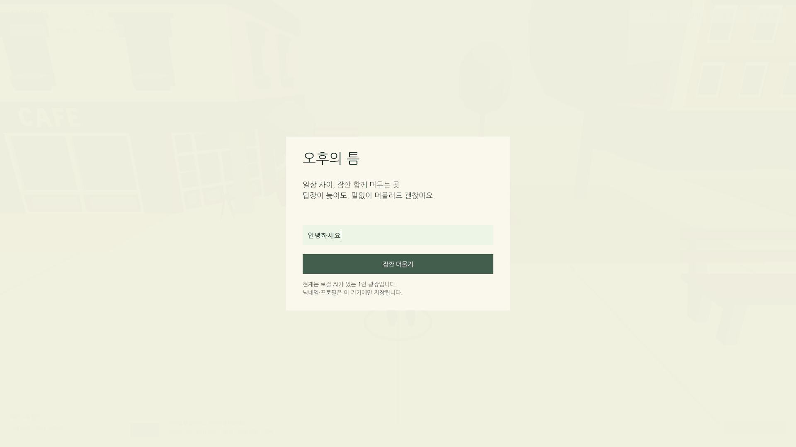
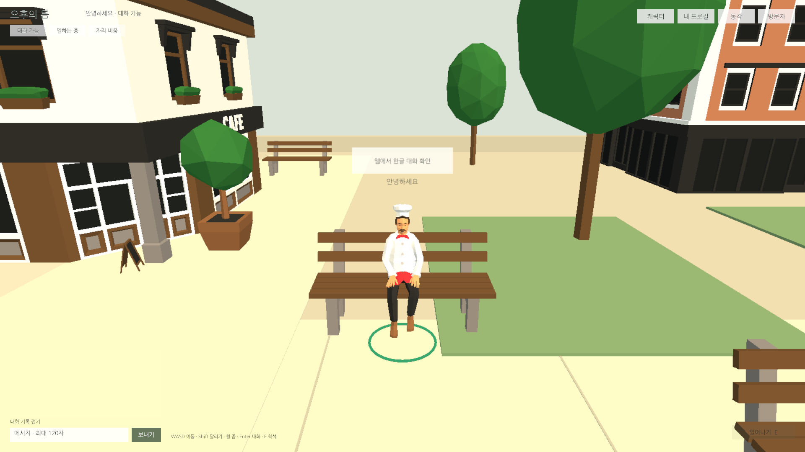

Tracefolio REPORTS & ISSUES
Tracefolio REPORTS & ISSUESPC 웹 경량화와 한글 입력·AI 0/6/12명 실측
검증 대기최신 TPS 웹 빌드를 26.31MB에서24.14MB로8.23% 줄이고 Chrome·Edge의 한글 조합·이동·착석·실제 탭 이탈을 확인했습니다. 수시간 검증은 미실행입니다.
작업 결과
코드 크기 최적화·Medium stripping·웹 전용 HDR 비활성·HTML IME 입력 브리지를 적용했습니다. 외부 에셋·패키지·엔진 원본은 수정하지 않았습니다. 최신 빌드의 실제 기능·성능 수치와 제한을 아래에 기록했습니다.
변경 내용
적용 내용
- WebGL DiskSize 코드 최적화, Managed Stripping Medium. Inspector/JSON/SendMessage에 사용하는 자체 Runtime을 link.xml로 보존.
- 원본 Mobile/PC 파이프라인을 보존하고 자체 Web_RPAsset을 만들어 HDR을 끕니다.
- Unity6000.0 Web IME 제한에 대응해 자체 .jslib와 정적 HTML input/textarea를 연결했습니다. 한글 조합 중 Enter 전송을 막고 완료 후 기존 Inspector 동작으로 전달합니다. 닉네임·채팅·프로필 InputField가 공통으로 사용합니다.
- 템플릿에 자동 영구 저장 동기화, 호스팅 MIME/gzip 설정 예제를 추가했습니다. 임시 Editor 빌드/설정 도구는 제거했습니다.
추가 작업: 요청한 최적화 외에 확인된 웹 한글 입력 제한을 보완하고 호스팅 설정·라이선스 확인 문서를 작성했습니다.

검증
| 구분 | AI | FPS 중앙값 | 프레임 p95 ms | 전경 CPU 1코어 % | 배경 CPU % | 로드 초 |
|---|---|---|---|---|---|---|
| base-0 | 0 | 30.01 | 34.0 | 7.55 | 0.028 | 3.29 |
| base-6 | 6 | 30.01 | 34.0 | 9.05 | 0.024 | 3.19 |
| base-12 | 12 | 30.01 | 34.0 | 11.68 | 0.020 | 3.17 |
| opt-functional | 0 | 30.01 | 34.0 | 7.11 | 0.309 | 3.10 |
| opt-6 | 6 | 30.01 | 34.0 | 10.29 | 0.026 | 3.19 |
| opt-12-long | 12 | 30.01 | 34.0 | 10.14 | 0.018 | 3.48 |
| edge-6 | 6 | 30.01 | 34.0 | 11.19 | 0.382 | 3.49 |
Chrome/Edge 실제 브라우저,1920×1080, GTX970/D3D11 WebGL2. CPU는 renderer TaskDuration/경과 시간의 단일 코어 비율이며 전체 PC CPU가 아닙니다. 짧은 구간은 비교 자료이며 작은 차이를 개선으로 단정하지 않습니다.
- 빌드 총26307796→24143127바이트,2164669바이트(8.23%) 감소. WASM 메모리 크기는 모든 검사에서115998720바이트로 유지됐습니다. 고정 산출물·소스 SHA256.
- 실제 compositionstart/update/end와 한글 최종값, 입장·WASD·Enter 채팅·말풍선·착석·기립을 확인했습니다. 첫 착석 검사는 도착 전 상호작용으로 실패했고 대기 조건 수정 후 재검사했습니다.
- 모든 실행에서 별도 실제 탭을 활성화해 document.visibilityState=hidden,5FPS,AI 정지 및 복귀30FPS를 검사했습니다. Playwright focus emulation 결과를 숨김 검증으로 사용하지 않았습니다.
- 최적화12명은120초 연속 측정했습니다. 이는 수시간 안정성을 입증하지 않습니다. 각 JSON에 프레임·메모리·AI 경로 요청/완료·표시 캐릭터·브라우저 경고가 포함됩니다.
- 최종 컴파일:Runtime/RuntimeEditor/Editor 모두0. 임시 도구 삭제 후 검사.


교훈 검토: 포커스 에뮬레이션과 실제 탭 숨김을 구분하는 검사와 도착 확인을 프로젝트 QA에 기록했습니다. 기존 근거 확인·외부 원본 보존 지침과 중복되므로 전역 추가·통합·변경 없음.
남은 사항
12명120초에서 최대 프레임287ms가 기록됐고 Managed 메모리2920448→4849664바이트 증가가 관찰됐습니다. 원인과 장기 수렴은 미확인입니다. 수시간 장기 접속·다양한 GPU/브라우저 버전·모든 상세 UI의 웹 회귀는 미실행입니다. 기존 Unity Play555개 결과를 웹 전체 통과로 대체하지 않았습니다. 시작 시 WebGL INVALID_ENUM 경고가 남아 있으면 각 원자료 warnings에 보존하며 오류0과 구분합니다. 에셋 구매 증빙·상표/도메인 권리 판단은 미확인이고 실제 게임 공개 배포는 하지 않았습니다. 모바일·멀티플레이 제외.
작업 시간
- 제안 시간: 최초60
100분. 사용자 재지정20분(11:49:1912:09:19 KST) - 실제로 완료된 시간: 최초 시작 2026-11-04 05:25:17 KST, 중간 장시간 미진행으로 최초 예상 초과. 실제 경과 6시간37분. 재개 11:49:19 KST → 구현·측정 종료 2026-11-04 12:02:42 KST (13분24초). 공개 배포는 별도 확인.
- XERJ: 미사용 — XERJ MCP/검색 스크립트 미제공. rg·현재 소스·공식 Unity문서·실제 raw CDP 브라우저 검사로 대체.